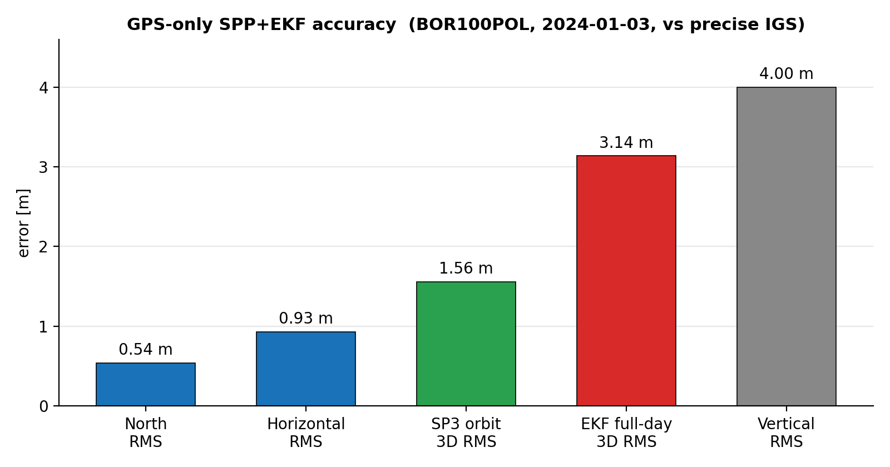

GPS Single-Point Positioning + EKF
A from-scratch GNSS pipeline in C++17
Overview
A GPS-only pseudorange positioning engine in modern C++17: RINEX 3.x parsing, broadcast orbit and clock modelling, weighted least squares and an EKF, validated against precise IGS SP3 orbits with an independent Python audit.
The challenge
Turning raw RINEX observations into a position fix means modelling satellite orbits and clocks from the navigation message and estimating the receiver state robustly.
Approach
- Parse RINEX 3.x observation and navigation files (priority/fallback selection)
- Model broadcast orbits and clocks (Kepler, relativistic, Earth-rotation corrections)
- Estimate position with weighted least squares and an EKF
- Validate against precise IGS SP3 orbits; deterministic tests + independent audit
Results
| Full-day LS 3D RMS | 2.52 m |
| Full-day EKF 3D RMS | 2.03 m |
| SP3 95th-pct 3D | 2.37 m |
| Language | C++17 (CMake/Ninja) |

What it demonstrates
Demonstrates from-scratch GNSS engineering: file parsing, orbit/clock modelling, least-squares and Kalman estimation, validation, and disciplined testing in C++.